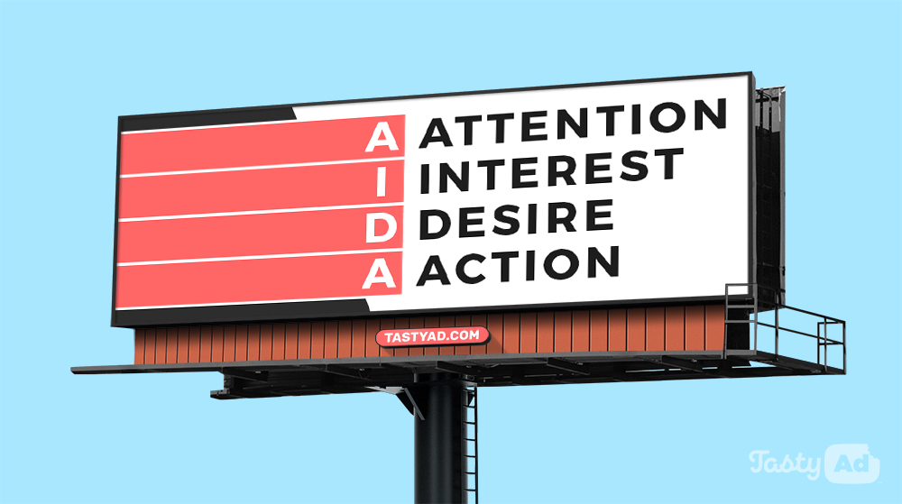

ডিজিটাল মার্কেটিং কি?

|
Rejaul Islam |
15 Nov, 2022 |

আপনি যেহেতু আমার এই পোস্টটি পড়ার জন্য ক্লিক করেছেন তাহলে আপনি অবস্যই ডিজিটাল মার্কেটিং কি বা ফ্রিলান্সিং
করার জন্য নিজেকে প্রস্তুত করছেন তাই একটু জেনে নিচ্ছেন আগে থেকেই। অবস্যই আপনি একদম সঠিক কাজ করেছেন। তাহলে
চলুন
শুরু করা যাক।
ডিজিটাল মার্কেটিং নিয়ে আলোচনা করার আগে চলুন যেনে নেয়া যাক এটা আসলে কি।আসলে এটা এমন একটা প্লাটফর্ম যেখানে বা
যেভাবে আপনি আপনার ব্যাবসাকে মানুষের সামনে তুলে ধরবেন।
আপনি আপনার প্রতিষ্ঠান বা আপনার কোন প্রডাক্ট মানুষের সামনে এমন ভাবে তুলে ধরবেন যাতে সে আকৃষ্ট হয় এটাই আপনার
মূল
লক্ষ্য।
প্রথমেই একটু মাথা খাটিয়ে ভেবে দেখুন তো আমাদের টপিক টা কি। আমাদের টপিক হচ্ছে ডিজিটাল মার্কেটিং তাই না।
এখানে প্রথম কথাটাই হচ্ছে ডিজিটাল তাহলে ডিজিটাল কোন মাধ্যম বা কোন ডিভাইস প্রয়োজন হবে কি তাই না।
সহজ কথা হলো আধুনিক সব প্রুযুক্তি ব্যবহার করে আর ইন্টারনেট সেবা ব্যবহার করে কোনো পন্যের প্রচারনা করাই হলো
ডিজিটালি মার্কেটিং। আর এই সম্পূর্ণ কাজটা যেহেতু ডিজিটাল প্রযুক্তির বা মাধ্যেমের সাহায্যে হচ্ছে তাই আমরা
এটাকে নাম দিয়েছি ডিজিটাল মার্কেটিং।
এখন প্রশ্ন হচ্ছে আমরা কি কোন প্রোডাক্ট এর মার্কেটিং এর জন্যই সুধু ডিজিটাল মার্কেটিং করবো?
উত্তরঃ না !
ধরা যাক, আপনি একজন মেধাবী স্টুডেন্ট এখন আপনি একটি প্রাইভেট প্রোগ্রাম শুরু করবেন কিন্তু আপনি বুঝতে পারছেন না
যে আমি আমার কথা কিভাবে সবার কাছে পৌছাই দিবো যে আমি প্রাইভেট পড়াতে ইচ্ছুক কি তাই না। ধরুন এখন আপনি যদি এখন এ
সময় কোনো সোস্যাল মিডিয়াতে আপনার এই কথাটি পোস্ট করলেন। আপনি যে ডিজিটাল মাধ্যেম ব্যবহার করে আপনার প্রচার করলেন
এটাও কিন্তু এক প্রকার ডিজিটাল মার্কেটিং। ফেসবুক কিংবা ইউটিউব চালানোর সময় আমরা কিছু বিঙ্গাপন দেখি সব কিছুই
কিন্তু ডিজিটাল মার্কেটিং।

ডিজিটাল মাধ্যম কি?
সহজ ভাষায় বলতে গেলে যেসব মাধ্যম ইন্টারনেট কিংবা নেটওয়ার্ক এর সাথে সংযুক্ত সকল মাধ্যমকে ডিজিটাল মাধ্যম বলে।
অ্যানালগ মার্কেটিং

অ্যানালগ মার্কেটিং এর হাত ধরেই বর্তমান প্রযুক্তির কল্যানে আজকের এই ডিজিটাল মার্কেটিং। একটা জিনিস ভাবুন তো
যখন
থেকে ব্যবসা বাণিজ্য শুরু হয়েছে তখন কি এরকম ফেসবুক, ইউটিউব ছিলো নিশ্চই ছিলো না তাহলে কি তখন তারা তাদের
ব্যবসার বা
পণ্যের প্রচারনা করে নি আর করলেও বা কিভাবে করেছে কি তাই তো। ঘাবরানোর কিছু নাই, চলুন দেখে আসি,
যখন এসব কোনো ডিজিটাল মাধ্যেম ছিলো না তখন বাড়িতে বাড়িতে গিয়ে প্রচার প্রচারনা করা হতো। আমরা যারা গ্রাম থেকে
আছি
আমরা ভালো বলতে পারবো, আমরা অনেকেই নিশ্চই দেখেছি আমাদের গ্রামে বা বাজারে অনেক সময়
গাড়ি নিয়ে আসতো প্রথমে তারা নানান খেলা কিংবা গান করতো কিন্তু পরে ঠিকি তারা তাদের প্রোডাক্ট এর কথা বলে নিতে
বলে এক
প্রকার প্রলোভন দেখায় আর তাতে অনেকেই নিয়ে নেয়।
এই যে তারা তাদের প্রোডাক্ট এর কথা সবার সামতে তুলে ধরলো -- নাচ- গান এর মাধ্যেমে এটাও কিন্তু এক প্রকার অন্যালগ মার্কেটিং। আমরা অনেকেই হয়তো দেখেছি স্কুল কিংবা কলেজেট গেটে অনেকেই লিফলেট দেয়। রাস্তায় চলার সময় চোখে পরে যায় বিশাল একটা বিলবোর্ড। কোন মডেল কে দিয়ে তাদের প্রোডাক্টটি তুলে ধরেছে।এর সবই কিন্তু অ্যানালগ মার্কেটিং। সহজ ভাষায় বলতে গেলে ডিজিটাল মধ্যেম ব্যবহার না করে যেভাবেই মার্কেটিং করা হোক না কেন সবই অন্যালগ মার্কেটিং এর আওতাভুক্ত।
এই যে তারা তাদের প্রোডাক্ট এর কথা সবার সামতে তুলে ধরলো -- নাচ- গান এর মাধ্যেমে এটাও কিন্তু এক প্রকার অন্যালগ মার্কেটিং। আমরা অনেকেই হয়তো দেখেছি স্কুল কিংবা কলেজেট গেটে অনেকেই লিফলেট দেয়। রাস্তায় চলার সময় চোখে পরে যায় বিশাল একটা বিলবোর্ড। কোন মডেল কে দিয়ে তাদের প্রোডাক্টটি তুলে ধরেছে।এর সবই কিন্তু অ্যানালগ মার্কেটিং। সহজ ভাষায় বলতে গেলে ডিজিটাল মধ্যেম ব্যবহার না করে যেভাবেই মার্কেটিং করা হোক না কেন সবই অন্যালগ মার্কেটিং এর আওতাভুক্ত।
আশা করি বুঝতে পেরেছেন
বর্তমান সময়ে অ্যানালগ মার্কেটিং

প্রযুক্তি দিন দিন বদলাচ্ছে। মানুষের ভালো লাগা মানুষের সময় কাটানোর মাধ্যেম পাল্টাচ্ছে। সবাই এখন ডিজিটাল
ডিভাইসে
আকৃষ্ট হচ্ছে।
এখন ধরা যাক আমি একটা প্রডাক্ট লঞ্চ করেছি এখন পরিচিতির জন্য আমি সেই আগের দিনের জন্য বাড়িতে বাড়িতে গিয়ে বলি এটা আমার নতুন একটা প্রোডাক্ট।
অনেকেই আপনার ডাকে আসবেই না। কিন্তু আপনি যদি কোনো সোস্যাল মিডিয়াতে পোস্ট করেন তাহলে অল্প সময়ের মধ্যে অনেকের কাছে পৌছানো সম্ভব। এতে শ্রম ও সময় উভয় কম লাগে। তাই এই বর্তমান সময়ে এসে অন্যালগ মার্কেটিং কমে গেছে( নাই বললেই চলে)।

এখন ধরা যাক আমি একটা প্রডাক্ট লঞ্চ করেছি এখন পরিচিতির জন্য আমি সেই আগের দিনের জন্য বাড়িতে বাড়িতে গিয়ে বলি এটা আমার নতুন একটা প্রোডাক্ট।
অনেকেই আপনার ডাকে আসবেই না। কিন্তু আপনি যদি কোনো সোস্যাল মিডিয়াতে পোস্ট করেন তাহলে অল্প সময়ের মধ্যে অনেকের কাছে পৌছানো সম্ভব। এতে শ্রম ও সময় উভয় কম লাগে। তাই এই বর্তমান সময়ে এসে অন্যালগ মার্কেটিং কমে গেছে( নাই বললেই চলে)।
কিন্তু এখন অনেকের প্রশ্ন থাকতে পারে আমরা যে দেখি উন্নত দেশগুলাতেও বিলবোর্ডের ছরাছরি তাহলে তারা এত উন্নত হয়েও
কেন এখনো বিলবোর্ডে মার্কেটিং করে।আসলে প্রথমেই বলেছি আপনার মার্কেটিং করার মূল লক্ষ হলো আপনার প্রোডাক্ট বা
আপনি য়া প্রচার করতে চান তা যেন মানুষের কাছে আকৃষ্ট হয়। আসলে আপনি আধুনিক দেশগুলোতে যে বিলবোর্ড দেখছেন তাতে
আছে ভীষণ রকম আধুনিকতার এক বিশেষ ছোয়া।বিলবোর্ড হিসেবে তারা ব্যবহার করে খুবই উন্নত মানের ডিসপ্লে অথবা ( 3D)
ডিসপ্লে যেখানে কোনো কিছুর এড দেখালে সহযেই মানুষের মন জয় করা সম্ভব মানে কারো নজরে আনা সম্ভব।আর এই আধুনিকতাকে
কাজে লাগিয়ে তারা মার্কেটিং করে আসছে।
বর্তমানে কিছু (effect) তারা ব্যবহার করছে যেখানে দেখা যায় কেউ হয়তো ডিসপ্লে ভেঙ্গে বের হয়ে আসছে যা সত্যি
অসাধারণ।
ডিজিটাল মার্কেটিং এর - প্রকারভেদ
কত উপায়ে ডিজিটাল মার্কেটিং করা যেতে পারে তা দেখে নেইঃ
✔ সোশ্যাল মিডিয়া মার্কেটিং
✔ ইমেল মার্কেটিং
✔ সার্চ ইঞ্জিন অপটিমাইজেশন
✔ অ্যফিলিয়েট মার্কেটিং
✔ কনটেন্ট মার্কেটিং
✔ ইমেল মার্কেটিং
✔ সার্চ ইঞ্জিন অপটিমাইজেশন
✔ অ্যফিলিয়েট মার্কেটিং
✔ কনটেন্ট মার্কেটিং